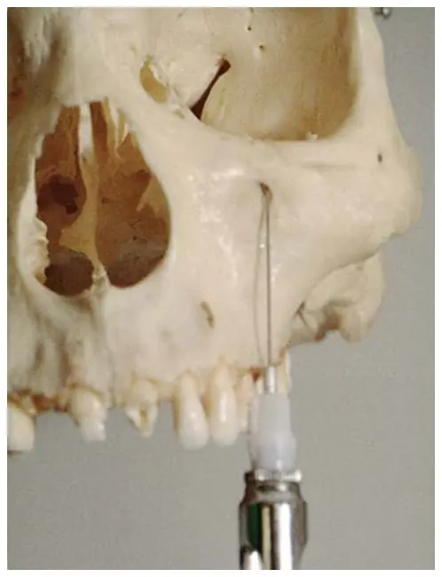
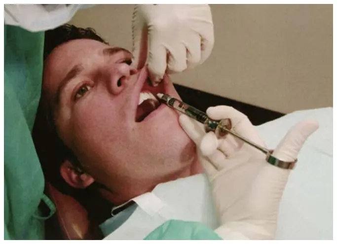

نسخه استخراجشده؛ ترجمه یا تأیید علمی انجام نشده است. وضعیت: captured
سوراخ اینفرااوربیتال بیمار ۵۰ سالهای را لمس کردهای و انگشتت رویش است. میخواهی سانترال تا کانین را برای ترمیم بیحس کنی. سوزن را از کجا و با چه زاویهای جلو ببری تا به سوراخ برسی، نه به استخوان پایینتر؟

عمق نفوذ در بزرگسال با قد متوسط حدود ۱۶ میلیمتر است، یعنی حدود نصف سوزن بلند. اگر وستیبول عمیق یا سوراخ پایین باشد، عمق کمتری لازم است؛ اگر وستیبول کمعمق یا سوراخ بالا باشد، عمق بیشتری.
پیش از تزریق عمق کافی، انحراف سوزن به داخل یا خارج سوراخ، و رو به استخوان بودن بول را بسنج. اگر سوزن را زیر انگشت حس کردی، مسیرش سطحی است؛ کمی عقب بکش و دوباره رو به سوراخ ببر.

بیحسی پلک پایین، کنارهی بینی و لب بالا تقریباً فوری است و فقط نشان میدهد عصب اینفرااوربیتال گرفته است. بیحسی دندانها با حفظ فشار در ۳ تا ۵ دقیقه میرسد؛ آن را با تست سرما یا EPT بسنج. هماتوم نادر است و در پلک پایین میآید؛ ۲ تا ۳ دقیقه روی سوراخ فشار بده.
اشتباه رایج: سوزن زیر سوراخ به استخوان میخورد. لب و بینی بیحس میشوند و دندانها نه؛ برآمدگی دارو زیر پوست دور از سوراخ حس میشود و سوراخ هنوز لمسشدنی است. این شایعترین علت شکست است و در عمل یک اینفیلتراسیون روی پرمولر اول زدهای. سوزن را همراستای سوراخ نگه دار، رو به استخوان نبر و عمق را از پیش تخمین بزن.